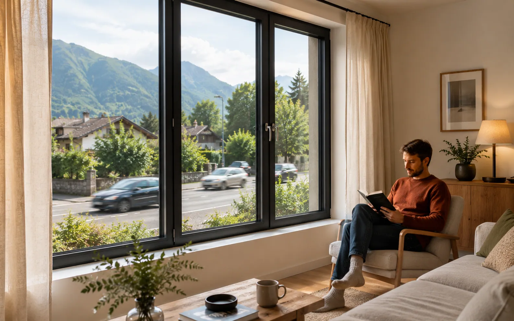
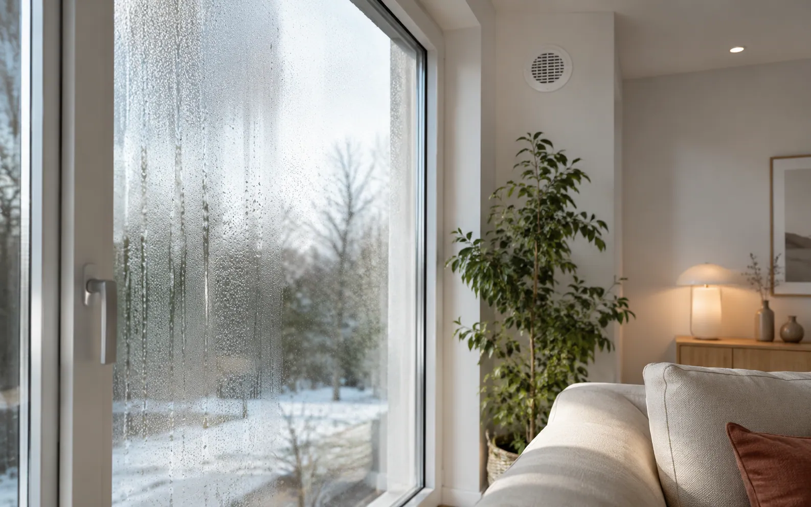
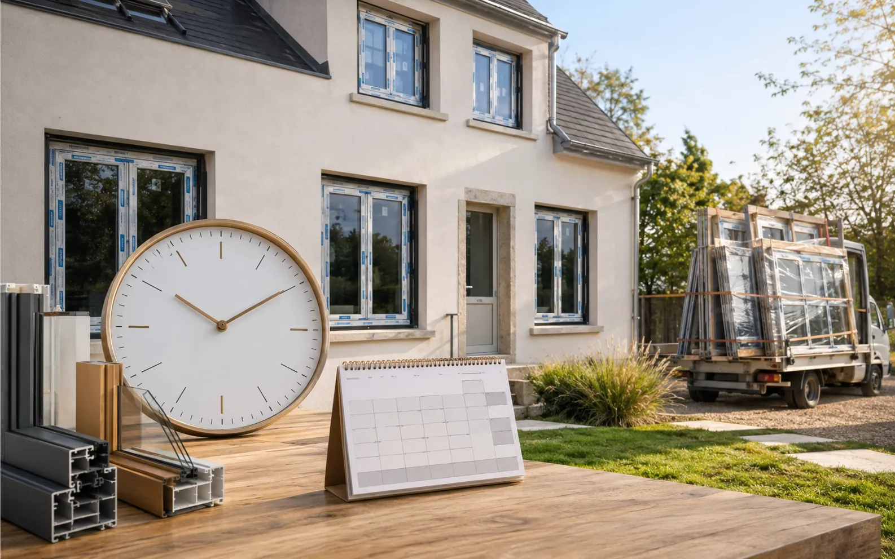

Aides · 7 min de lecture
MaPrimeRénov’ 2026 : ce qu’il faut vérifier avant de changer ses fenêtres
Aides, conditions, démarches, revenus et cumul possible : le guide à lire avant de signer un devis de menuiseries.
Lire le guideDes guides courts et concrets pour comprendre vos options avant de demander un devis : fenêtres, vitrages, isolation, volets, stores, pergolas, portes, portails, aides et démarches locales.
Aides, conditions, démarches, revenus et cumul possible : le guide à lire avant de signer un devis de menuiseries.
Lire le guide
Clair de jour, seuil, isolation, passage, budget et travaux : le vrai comparatif entre coulissant et galandage.

Vitrage acoustique, entrées d'air, pose et coffres de volets : les vrais leviers pour réduire les nuisances sonores.

Comparer brise-soleil orientable et volet roulant pour gérer chaleur, lumière, intimité et sécurité.

Pourquoi des fenêtres plus étanches peuvent révéler un problème de ventilation et comment réagir sans mauvais diagnostic.

RAL, bicoloration, harmonie de façade, copropriété et mairie : les vérifications avant de commander une couleur.

Commande, fabrication, autorisations, pose et finitions : les étapes qui expliquent le calendrier d'un chantier de menuiseries.